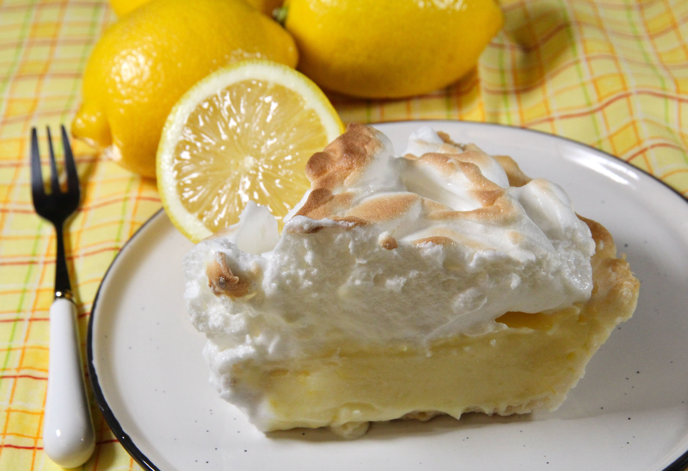

Lemon Pie

Aprende a hacer este clasico y delicioso lemon pie.
La receta ideal para esos dias en los que necesitas un postre.
Ingredientes
Para la masa:
- 300g de harina
- 200g de manteca
- 100g de azucar
- 1 yema
- Sal
Para el relleno:
- 4 yemas
- 1/2 litro de leche
- 200cc de jugo de limon
- 200g de azucar
- 60g de almidon de maiz
- 1 cda de manteca
- Ralladura de limon
Para la cobertura:
- 5 claras
- 300g de azucar
- 100cc de agua
Pasos:
- Para la masa: Batir la manteca pomada con el azúcar. Agregar la yema y la esencia de vainilla. Una vez que esté bien emulsionado agregar la harina.
- Unir rápidamente y llevar a frío.
- Estirar la masa y fonsar un molde desmontable. Cocinar pinchada con tenedor por 15 minutos a horno moderado, hasta que esté cocida totalmente.
- Para el relleno: Calentar la leche con la mitad del azúcar.
- En un bowl mezclar el resto del azúcar con el almidón de maíz. Mezclar bien e incorporar las yemas, el jugo y la ralladura de limón. Una vez mezclado agregar la leche caliente y llevar a cocinar todo junto revolviendo siempre. Cocinar hasta que hierva por un minuto y retirar del fuego. Agregar la manteca y tapar con un film en contacto.
- Una vez que se enfríe la crema de limón, cubrir la masa de tarta.
- Hacer un merengue italiano con las claras sobrantes y cubrir la crema.
- Sopletear y listo!
Volver al titulo
Volver